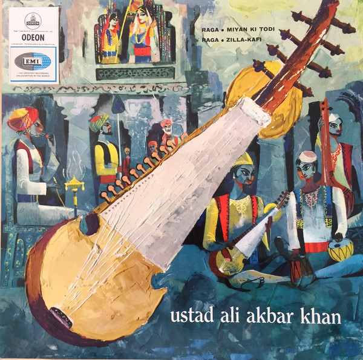

LP
Raga Miyan Ki Todi / Raga Zilla-Kafi
Ali Akbar Khan
Media: — · Sleeve: —
—
Personal
Discogs SuggestedCA$45.20
Discogs MedianCA$45.20
Discogs HighCA$45.20
- Physical Copy ID
- BB-LP-169
- Year
- 1965
- Label
- Odeon
- Catalog #
- MOAE. 130
- Country
- INIndia
- Genre / Style
- Folk, World, & Country · Indian Classical, Hindustani